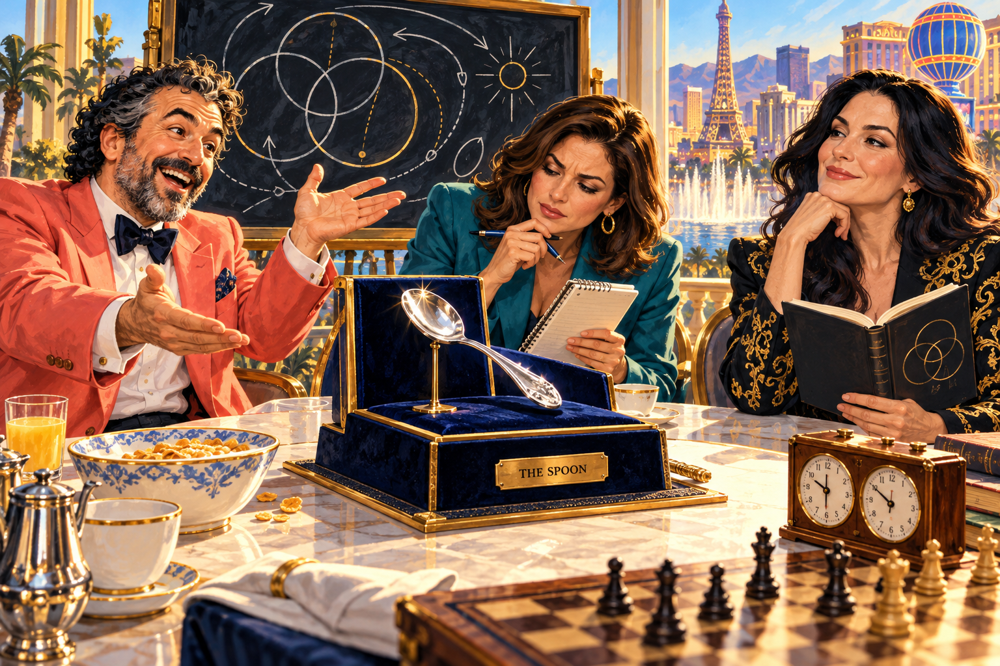

Three’s a Quorum
The Las Vegas School of Esoteric Government
A ridiculous political and philosophical sketch • Newfoundlandia, AD 2445

I. The announcement
[An imaginary Las Vegas suite. One chessboard. Three lecterns. A fourth lectern marked ABSOLUTE TRUTH is currently holding the coffee.]
MANNY Citizens! Tara and I are running for president and vice president. We haven’t decided which of us is which.
TARA We have decided. You keep calling the decision an open metaphysical problem.
MANNY I propose joint sovereignty.
TARA I propose you stop announcing constitutional amendments in the breakfast queue.
VICTORIA Before either of you governs, what is a person?
TARA A likely voter with a complicated relationship to polling.
MANNY An experiencing individual capable of love, reason, and adding things.
VICTORIA Better. What is government?
MANNY Several such individuals, with parking.
[The audience applauds. The valet requests a definition of justice.]
II. The relationship desk
TARA Your press release says “two wives.”
MANNY A chess fantasy! Two queens! Abundant possibilities!
VICTORIA Neither of us has agreed to be a piece in your metaphor.
TARA And your next sentence calls her your mistress.
MANNY Mistress of philosophical ceremonies. Entirely friendly. Extremely rigorous.
VICTORIA Then put “chair of the seminar.”
MANNY Less Vegas.
VICTORIA More accurate.
TARA Then “sister wives”?
MANNY A coalition of independent minds!
TARA That’s three corrections in one paragraph. I’m billing the campaign for editing.
[She crosses out the heading and writes THREE’S A QUORUM.]
MANNY Exoterically, a sitcom. Esoterically, a research programme.
TARA Administratively, a mess.
III. The faith-and-freedom buffet
MANNY Long live Allah! Viva Las Vegas! An Abrahamic unity ticket!
VICTORIA Unity does not mean every distinction disappears.
TARA For instance, the wedding chapel and the election office are different counters.
MANNY What about an Islamo-Christo-fascist Three’s Company?
TARA The first two prefixes need an interfaith committee. The last one gets rejected from the platform.
VICTORIA If your unity requires silencing the other person, you’ve abolished the conversation you wanted to unite.
MANNY Fine. Authoritarianism defeated by peer review.
TARA We’re keeping the interfaith buffet. Participation voluntary. Labels legible.
[A casino manager offers a constitutional monarchy with complimentary room upgrades. All three decline the monarchy and examine the upgrades.]
IV. The smallest scandal in political history
TARA Tonight’s headline: LOCAL MAN DEMANDS BIGGER CIRCLES.
MANNY Because minds add!
VICTORIA Add what?
MANNY Memory, meanings, possibilities. Minds add minds. Creativity adds futures.
TARA Can the futures include a finished campaign website?
VICTORIA The philosophical question is whether novelty is genuinely new, or merely something we failed to predict.
MANNY Finally! Bergson enters the room!
TARA He’ll need a visitor badge.
MANNY Time is not merely the clock!
TARA True. But the venue charges by the hour.
[Victoria turns over the chess clock. Tara turns over the invoice. Manny experiences duration.]
V. The liar takes questions
MANNY New campaign promise: this campaign promise is false.
TARA At last, a statement our fact-checkers can work on indefinitely.
VICTORIA That sentence creates a problem about truth. It doesn’t establish a theory of consciousness.
MANNY But someone is experiencing the problem!
VICTORIA Yes. That is a different argument.
TARA Excellent. Two stories. One interview.
MANNY You see? Minds add.
TARA And editorial desks subtract. That’s how we get a publishable word count.
[The lectern marked ABSOLUTE TRUTH collapses beneath an unauthorized espresso machine. Nobody takes this as a refutation.]

VI. The esoteric debate
MANNY Our public platform is “EVERYONE GETS A SPOON.”
TARA Our private platform is also “EVERYONE GETS A SPOON.”
VICTORIA Admirably consistent. Where is the esoteric teaching?
MANNY The cereal.
TARA The cereal is visible through the box.
MANNY Transparent government!
VICTORIA Reading between the lines requires lines worth reading.
TARA And a hidden meaning isn’t automatically a good meaning. Sometimes the missing policy is simply missing.
MANNY You two have formed a devastating coalition.
TARA Opposition research began when you gave us the draft.
VII. The board of inquiry
[They return to the chessboard. In this fictional game, Manny has White.]
MANNY Observe. I offer a gambit.
TARA Is that what we’re calling the budget?
VICTORIA Focus. Your move.
[The opening runs: e4, e5; Bc4, Nc6; Qh5, Nf6.]
MANNY Queen takes f7. Checkmate.
[Victoria examines the square. Tara checks the move list. The bishop on c4 confirms the queen’s appointment.]
VICTORIA Correct. I overlooked the threat.
TARA Breaking news: Manny wins. Sources include the board.
MANNY A victory for subjectivity!
VICTORIA A victory for noticing f7.
MANNY Can it be both?
TARA Put that on a bumper sticker. We finally have a platform.
VIII. The concession speech
MANNY I accept the presidency.
TARA You won a chess game.
MANNY A mandate is a mandate.
VICTORIA You have earned another game.
TARA And the responsibility to make coffee.
MANNY Philosophy first. Spiritually open. Theology afterward.
VICTORIA And corrections whenever needed.
TARA Tomorrow’s headline: THREE ADULTS DISCOVER CONVERSATION; NATION CAUTIOUSLY OPTIMISTIC.
[They sit down. Nobody has married anybody. Nobody has established a theocracy. Manny has won the game, Tara has the headline, and Victoria has persuaded the room to distinguish a premise from a conclusion.]
[The spoon is available for inspection.]
CURTAIN.
Creative credit: A fictional sketch developed from Dr. Michael Emanuel Glover’s prompts with ChatGPT. “Dr.” is a character styling here, not independent credential verification. No participation or endorsement by the other named people is implied.